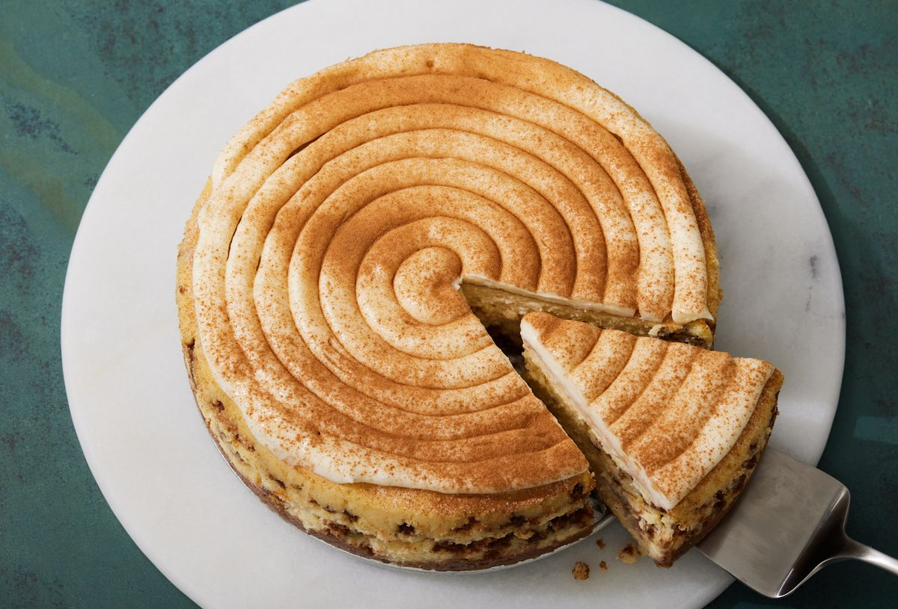

Recipe

Description
This cheesecake is the perfect mix between two classic desserts!
Ingredients
- 4 (8 oz.) packages of cream cheese, softened to room temperature
- 3/4 c. granulated sugar
- 1/2 c. packed light brown sugar
- 4 large eggs
- 2 tbsp. all-purpose flour
- 1 tsp. pure vanilla extract
- 2 tsp. kosher salt
- 1 sleeve graham crackers, finely crushed
- 6 tbsp. butter, melted
- 1/2 tsp. cinnamon
- Pinch kosher salt
- 3/4 c. brown sugar
- 1 tbsp. cinnamon
- 1/3 c. all-purpose flour
- 4 tbsp. butter, melted
- 6 oz. cream cheese, softened to room temperature
- 1 1/2 c. powdered sugar
- 1/2 tsp. pure vanilla extract
- 2 tbsp. heavy cream
- 1/4 c. cinnamon sugar, for top of cheesecake
- 1 tsp. cinnamon, for garnish (optional)
Steps
- Preheat oven to 325º and grease an 8” or 9" springform pan with cooking spray. Make cheesecake filling: In a large bowl using a hand mixer, beat cream cheese and sugars. Add eggs, one at a time, then flour, vanilla, and salt. Set aside.
- Make crust: In a large bowl, mix together graham cracker crumbs, melted butter, cinnamon and salt. Press mixture into prepared pan.
- Make cinnamon filling: In a medium bowl, whisk together brown sugar, cinnamon and flour. Stir in melted butter until cinnamon mixture resembles coarse sand.
- Pour 1/3 of filling over crust. Sprinkle 1/2 the cinnamon filling all over, then top with another 1/3 of cheesecake mixture. Sprinkle with remaining cinnamon mixture, then top with the rest of the cheesecake mixture. Smooth top.
- Wrap bottom of pan in aluminum foil and place on a baking sheet. (If you want to bake the cheesecake in a water bath, wrap bottom of pan and place in a deep baking pan. Pour in enough boiling water to come up halfway in the baking pan.) Bake until center of cheesecake only slightly jiggles, about 1 hour 30 minutes. Turn off heat, prop open oven door, and let cheesecake cool in oven, 1 hour, then remove aluminum foil and refrigerate cheesecake in pan until firm, at least 5 hours and up to overnight.
- Meanwhile, make icing: In a medium bowl, combine cream cheese and beat until light and fluffy. Add powdered sugar and vanilla and beat again until smooth. If icing is too thick, add heavy cream tablespoon by tablespoon until desired consistency is reached. Transfer to a piping bag.
- When cheesecake is cooled, sprinkle top with cinnamon sugar. Pipe icing in a swirl over the top of the cheesecake. Dust with cinnamon if using. Slice and serve.